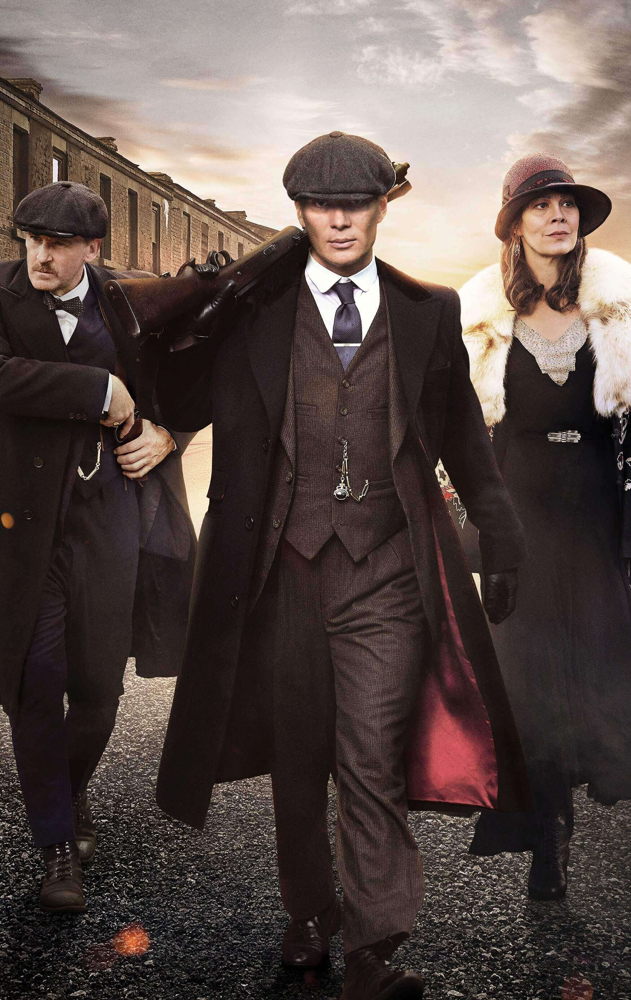
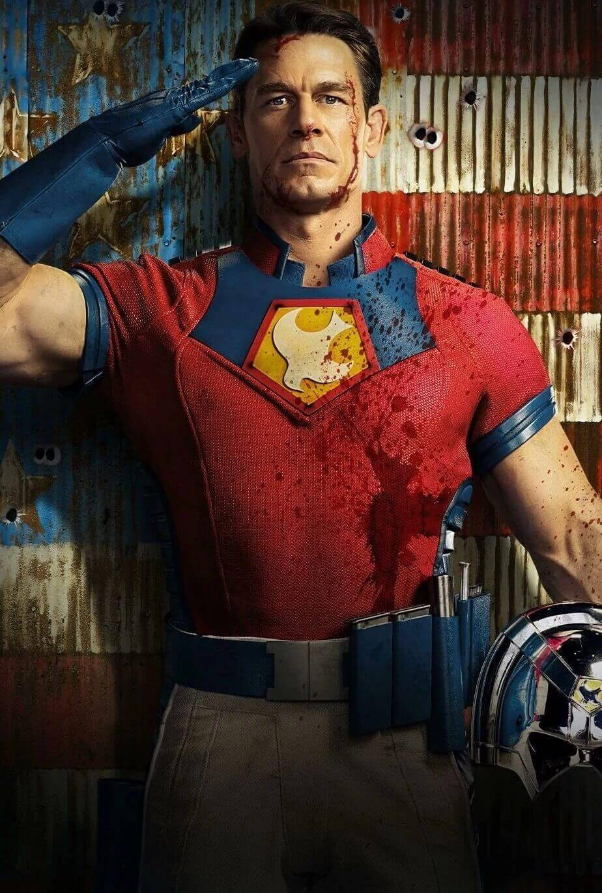
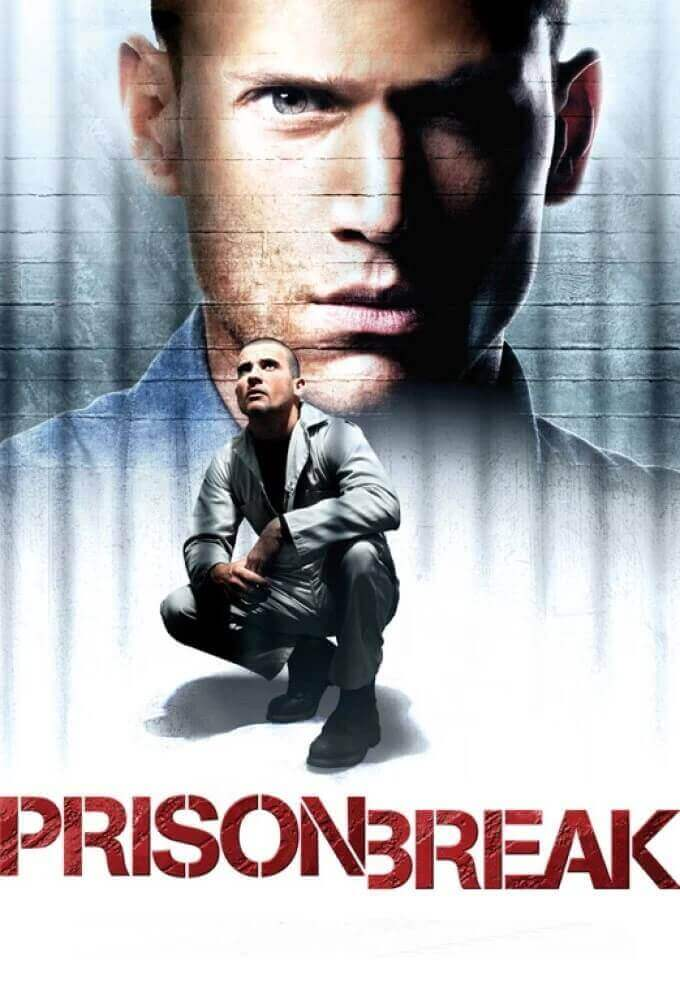
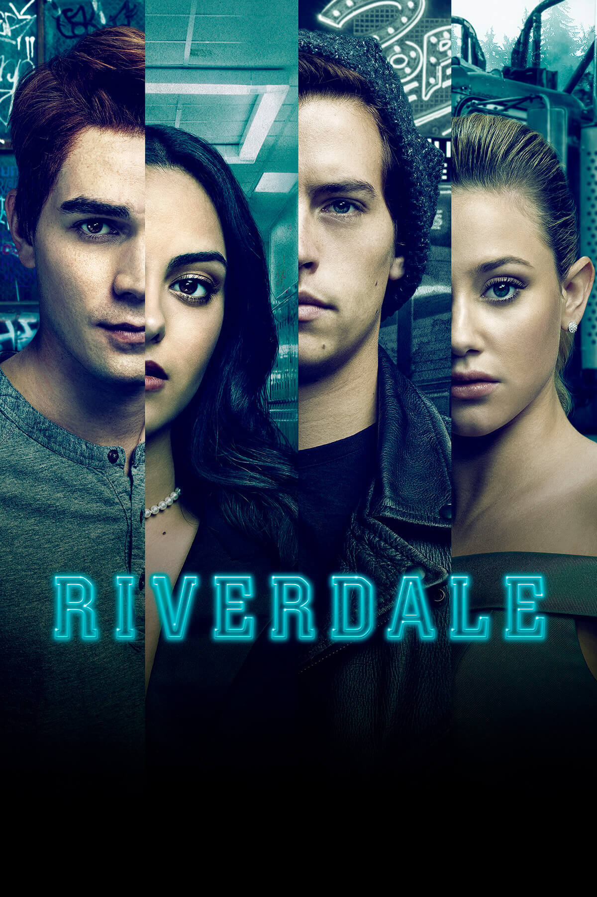
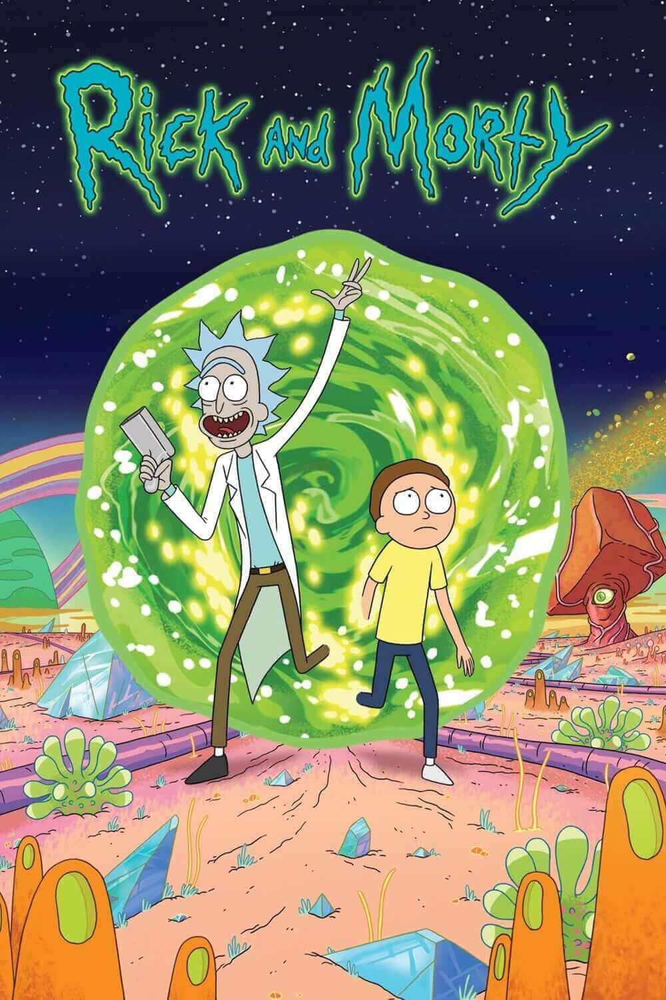
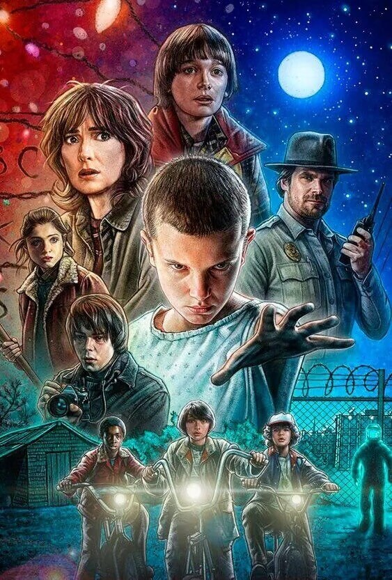
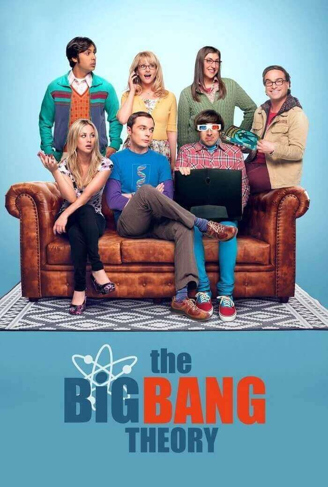
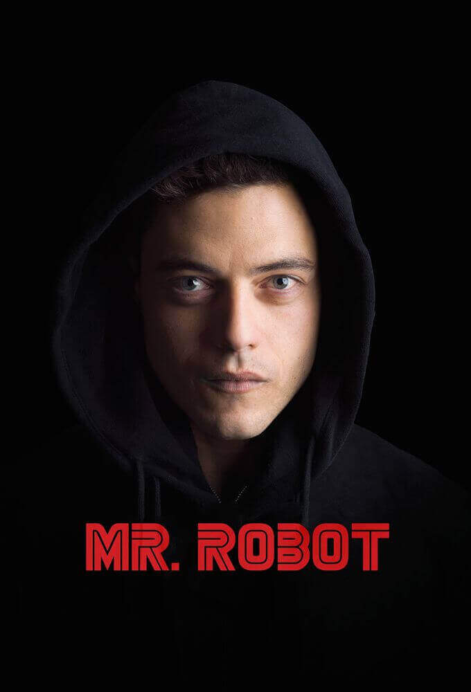

Series
Series
Vikings
Violento | Emocionante | Épico
Ragnar Lothbrok tiene un sueño, que es el de explorar nuevas civilizaciones surcando los mares.
Gracias a la ayuda de su amigo bufón Floki, construyen nuevos navíos más rápidos y elegantes
con los que poder dar forma a su mayor ilusión.
En su aventura chocan con Earl Haraldson, Gabriel Byrne su principal enemigo,
que sospecha de las expectativas de Lothbrok.
La lucha entre ambos no se hace esperar.
Lothbrok consigue llegar a ser el mejor guerrero de la tribu vikinga mientras lucha por convertirse el rey de Dinamarca y gran parte de, lo que hoy es, Suecia. La serie resalta las batallas con mayor imaginación, haciendo más énfasis en los puntos de vista individuales, las estrategias y astucias de los personajes.

Lothbrok consigue llegar a ser el mejor guerrero de la tribu vikinga mientras lucha por convertirse el rey de Dinamarca y gran parte de, lo que hoy es, Suecia. La serie resalta las batallas con mayor imaginación, haciendo más énfasis en los puntos de vista individuales, las estrategias y astucias de los personajes.
Peaky Blinders
Drama | Violento | Crimenes 
Peaky Blinders es un drama que narra la historia de la familia de gánsters Shelby,
asentada en Birmingham tras la Primera Guerra Mundial, característica por sus boinas con
cuchillas y dueñas de los asuntos ilegales que dominan las apuestas clandestinas y se rigen mediante
extorsiones. Las actividades de la banda llamaron la atención del inspector jefe
Chester Campbell, un detective de la Real Poilicía Irlandesa que es enviado desde Belfast para limpiar
la ciudad.
La historia comienza con la llegada de un joven Tomas (Tommy) Shelby que tras regresar de la guerra, se ocupara de los negocios familiares. Veremos como el joven lidia con las secuelas psicológicas de la guerra, y como llevara adelante su ambición y hambre por el poder intentando mantener a su familia a salvo.
La historia comienza con la llegada de un joven Tomas (Tommy) Shelby que tras regresar de la guerra, se ocupara de los negocios familiares. Veremos como el joven lidia con las secuelas psicológicas de la guerra, y como llevara adelante su ambición y hambre por el poder intentando mantener a su familia a salvo.
Peace Maker
Comedia | Violento | Épico 
La serie iniciará después de los eventos de The Suicide Squad,
cuando Peacemaker (John Cena), un asesino muy experimentado con conocimiento en
todas las armas, está en prisión.
Clemson Murn (Chukwudi Iwuji) le ofrece la oportunidad de evitar la cárcel al trabajar para él y formar un equipo para matar gente mala.
Con la misión de asesinar al senador Royland Goff, Peacemaker se une a Harcourt (Jennifer Holland), John Economos (Steve Agee), Vigilante (Freddie Stroma) y Adebayo (Danielle Brooks). Los miembros de la Fuerza Especial X harán todo lo posible para ser un equipo. Por otro lado, el antihéroe intentará reconciliarse con su padre.

Clemson Murn (Chukwudi Iwuji) le ofrece la oportunidad de evitar la cárcel al trabajar para él y formar un equipo para matar gente mala.
Con la misión de asesinar al senador Royland Goff, Peacemaker se une a Harcourt (Jennifer Holland), John Economos (Steve Agee), Vigilante (Freddie Stroma) y Adebayo (Danielle Brooks). Los miembros de la Fuerza Especial X harán todo lo posible para ser un equipo. Por otro lado, el antihéroe intentará reconciliarse con su padre.
Prison Break
Drama | Emocionante | Épico 
La primera temporada comienza cuando Lincoln Burrows es acusado
de asesinar a Terrence Steadman, el hermano de la vicepresidenta
de los Estados Unidos. Lincoln es sentenciado a muerte y enviado
a la Penitenciaría Estatal Fox River.
Michael Scofield, el hermano menor de Lincoln, está convencido de la inocencia de su hermano y elabora un plan de escape de la prisión. Después de haber planeado la fuga, Michael roba un banco a mano armada para que lo encarcelen en Fox River. Mientras, fuera de la cárcel la abogada Veronica Donovan, amiga de infancia de los hermanos, hace todo lo posible para aclarar la conspiración que llevó a Lincoln a la cárcel.

Michael Scofield, el hermano menor de Lincoln, está convencido de la inocencia de su hermano y elabora un plan de escape de la prisión. Después de haber planeado la fuga, Michael roba un banco a mano armada para que lo encarcelen en Fox River. Mientras, fuera de la cárcel la abogada Veronica Donovan, amiga de infancia de los hermanos, hace todo lo posible para aclarar la conspiración que llevó a Lincoln a la cárcel.
Riverdale
Misterio | Crimen | Juvenil 
En el pequeño pueblo de Riverdale, la muerte Jason Blossom,
el chico popular, sacude a todos los habitantes. Por
su parte, Archie Andrews descubre su amor por la música, lo que
le ocasiona problemas con su familia. Betty Cooper
regresa al pueblo después de un tiempo, con la idea de declararle
su amor a Archie, además descubre algunos secretos relacionados a su familia.
Veronica Lodge inicia una vida lejos de Nueva York, mientras
pone su atención en formar parte del grupo de porristas, algo
que Cheryl Blossom, toma como una amenaza.
Ahora Archie y su nuevo grupo de amigos deben de indagar en los secretos más obscuros del pueblo, tratando de descubrir los hechos que ocasionaron la muerte de un chico.
Ahora Archie y su nuevo grupo de amigos deben de indagar en los secretos más obscuros del pueblo, tratando de descubrir los hechos que ocasionaron la muerte de un chico.
Altered Carbon
Crimen | Sci-Fi | Violento
Altered Carbon es una serie exclusiva de Netflix basada en la
homónima novela de ciencia ficción escrita por Richard K. Morgan.
Publicada en el año 2002, Altered Carbon está ambientada en un futuro distópico, donde se explora qué es lo que sucede cuando la mente humana puede ser almacenada digitalmente y descargada en nuevos cuerpos. Takeshi Kovacs, un ex guerrero interestelar de élite de las Naciones Unidas que ha sido mantenido prisionero durante 500 años, es descargado en un futuro que siempre intentó detener. Arrojado en Bay City (la ciudad anteriormente conocida como San Francisco), Kovacs debe mostrarse capaz de resolver un asesinato en un mundo donde los avances tecnológicos han convertido la muerte en un concepto obsoleto.
Publicada en el año 2002, Altered Carbon está ambientada en un futuro distópico, donde se explora qué es lo que sucede cuando la mente humana puede ser almacenada digitalmente y descargada en nuevos cuerpos. Takeshi Kovacs, un ex guerrero interestelar de élite de las Naciones Unidas que ha sido mantenido prisionero durante 500 años, es descargado en un futuro que siempre intentó detener. Arrojado en Bay City (la ciudad anteriormente conocida como San Francisco), Kovacs debe mostrarse capaz de resolver un asesinato en un mundo donde los avances tecnológicos han convertido la muerte en un concepto obsoleto.
Rick and Morty
Comedia | Sci-Fi | Absurdo 
Rick Sánchez es la definición exacta de "científico loco",
es alcohólico, un genio, irresponsable y está loco.
Acaba de mudarse a casa de su hija Beth y allí recuerda que
tiene un nieto llamado Morty. Sin preguntar a nadie, decide que va
a obligarle a que le acompañe a todo tipo de aventuras para que
el chico se vuelva inteligente como él y no se convierta en un
idiota como Jerry, padre de Morty.
Así, Rick y Morty comienzan a vivir aventuras intergalácticas a pesar de que la familia no quiere que lo sigan haciendo. Poco a poco tienen que intentar encontrar un equilibrio entre su vida familiar y sus viajes a través del espacio y por distintas realidades paralelas, algo que no es fácil para el pequeño Morty que es incapaz de tener una vida normal al margen de su abuelo.
Así, Rick y Morty comienzan a vivir aventuras intergalácticas a pesar de que la familia no quiere que lo sigan haciendo. Poco a poco tienen que intentar encontrar un equilibrio entre su vida familiar y sus viajes a través del espacio y por distintas realidades paralelas, algo que no es fácil para el pequeño Morty que es incapaz de tener una vida normal al margen de su abuelo.
Stranger Things
Emocionante |Sci-Fi| Suspenso 
La serie inicia el 6 de noviembre de 1983,
en la ciudad de Hawkins, Indiana. Will Byers, un niño de
12 años de edad, tras pasar 10 horas jugando Calabozos y
Dragones con sus amigos Mike Wheeler, Dustin Henderson y Lucas
Sinclair, desaparece misteriosamente tras regresar a casa.
Al día siguiente su hermano Jonathan Byers y su madre Joyce
Byers, se dan cuenta de que no está en casa.
Desesperados, comienzan la búsqueda de Will. Mientras tanto, una niña con aspecto extraño y habilidades extrañas aparece en una cafetería de la localidad. Pero en el desarrollo de la búsqueda, descubrirán sus amigos y familiares que no solo tendrán que enfrentarse a una organización extraña, sino a siniestras fuerzas que planean devorar todo lo que esté a su paso.
Desesperados, comienzan la búsqueda de Will. Mientras tanto, una niña con aspecto extraño y habilidades extrañas aparece en una cafetería de la localidad. Pero en el desarrollo de la búsqueda, descubrirán sus amigos y familiares que no solo tendrán que enfrentarse a una organización extraña, sino a siniestras fuerzas que planean devorar todo lo que esté a su paso.
The Big Bang Theory
Comedia |Vida Cotidiana 
La serie transcurre en la vida cotidiana de dos de estos
peculiares personajes, Leonard Hofstadter y Sheldon Cooper,
dos físicos que comparten trabajo y apartamento.
Su vida cambia radicalmente cuando Penny,
una atractiva camarera con la que los científicos no
saben relacionarse, se convierte en su nueva vecina.
El simple hecho de una presencia femenina al otro lado del
pasillo se convierte en todo un desafío para ellos y
principal causa de todo tipo de situaciones disparatadas.
Comedia que muestra las pocas habilidades sociales de dos mentes privilegiadas. Está protagonizada por Johnny Galecki, Jim Parsons y Kaley Cuoco.
Comedia que muestra las pocas habilidades sociales de dos mentes privilegiadas. Está protagonizada por Johnny Galecki, Jim Parsons y Kaley Cuoco.
Mr. Robot
Suspenso | Drama | Moderna 
Mr. Robot se centra en un joven programador, Elliot (Rami Malek),
que sufre de un trastorno antisocial debilitante y
decide que sólo puede conectar con la gente a través
de la piratería. Él maneja sus habilidades como un
arma para proteger a las personas que le importan,
trabajando como ingeniero de seguridad cibernética
de día y como hacker de noche.
Esta situación pondrá a Elliot en la disyuntiva de elegir entre una firma de seguridad cibernética para la que trabaja o apoyar a las organizaciones de los bajos fondos que le quieren reclutar para derribar la América corporativa.

Esta situación pondrá a Elliot en la disyuntiva de elegir entre una firma de seguridad cibernética para la que trabaja o apoyar a las organizaciones de los bajos fondos que le quieren reclutar para derribar la América corporativa.